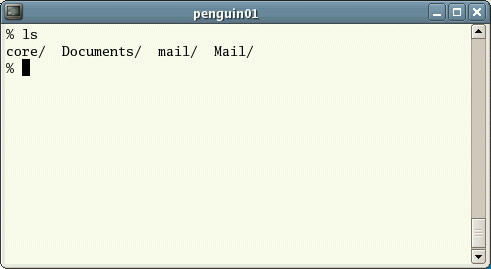
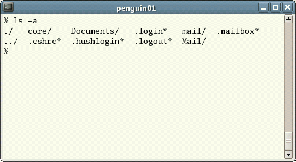

UNIX Tutorial One
1.1 Listing files and directories
ls (list)
When you first login, your current working directory is your home directory. Your home directory has the same name as your user-name, for example, ee91ab, and it is where your personal files and subdirectories are saved.
To find out what is in your home directory, type
% ls
The ls command ( lowercase L and lowercase S ) lists the contents of your current working directory.

There may be no files visible in your home directory, in which case, the UNIX prompt will be returned. Alternatively, there may already be some files inserted by the System Administrator when your account was created.
ls does not, in fact, cause all the files in your home directory to be listed, but only those ones whose name does not begin with a dot (.) Files beginning with a dot (.) are known as hidden files and usually contain important program configuration information. They are hidden because you should not change them unless you are very familiar with UNIX!!!
To list all files in your home directory including those whose names begin with a dot, type
% ls -a
As you can see, ls -a lists files that are normally hidden.

ls is an example of a command which can take options: -a is an example of an option. The options change the behaviour of the command. There are online manual pages that tell you which options a particular command can take, and how each option modifies the behaviour of the command. (See later in this tutorial)
1.2 Making Directories
mkdir (make directory)
We will now make a subdirectory in your home directory to hold the files you will be creating and using in the course of this tutorial. To make a subdirectory called unixstuff in your current working directory type
% mkdir unixstuff
To see the directory you have just created, type
% ls
1.3 Changing to a different directory
cd (change directory)
The command cd directory means change the current working directory to 'directory'. The current working directory may be thought of as the directory you are in, i.e. your current position in the file-system tree.
To change to the directory you have just made, type
% cd unixstuff
Type ls to see the contents (which should be empty)
Exercise 1a
Make another directory inside the unixstuff directory called backups
1.4 The directories . and ..
Still in the unixstuff directory, type
% ls -a
As you can see, in the unixstuff directory (and in all other directories), there are two special directories called (.) and (..)
The current directory (.)
In UNIX, (.) means the current directory, so typing
% cd .
NOTE: there is a space between cd and the dot
means stay where you are (the unixstuff directory).
This may not seem very useful at first, but using (.) as the name of the current directory will save a lot of typing, as we shall see later in the tutorial.
The parent directory (..)
(..) means the parent of the current directory, so typing
% cd ..
will take you one directory up the hierarchy (back to your home directory). Try it now.
Note: typing cd with no argument always returns you to your home directory. This is very useful if you are lost in the file system.
1.5 Pathnames
pwd (print working directory)
Pathnames enable you to work out where you are in relation to the whole file-system. For example, to find out the absolute pathname of your home-directory, type cd to get back to your home-directory and then type
% pwd
The full pathname will look something like this -
/home/its/ug1/ee51vn
which means that ee51vn (your home directory) is in the sub-directory ug1 (the group directory),which in turn is located in the its sub-directory, which is in the home sub-directory, which is in the top-level root directory called " / " .

Exercise 1b
Use the commands cd, ls and pwd to explore the file system.
(Remember, if you get lost, type cd by itself to return to your home-directory)
1.6 More about home directories and pathnames
Understanding pathnames
First type cd to get back to your home-directory, then type
% ls unixstuff
to list the conents of your unixstuff directory.
Now type
% ls backups
You will get a message like this -
backups: No such file or directory
The reason is, backups is not in your current working directory. To use a command on a file (or directory) not in the current working directory (the directory you are currently in), you must either cd to the correct directory, or specify its full pathname. To list the contents of your backups directory, you must type
% ls unixstuff/backups
~ (your home directory)
Home directories can also be referred to by the tilde ~ character. It can be used to specify paths starting at your home directory. So typing
% ls ~/unixstuff
will list the contents of your unixstuff directory, no matter where you currently are in the file system.
What do you think
% ls ~
would list?
What do you think
% ls ~/..
would list?
Summary
| Command | Meaning |
|---|---|
| ls | list files and directories |
| ls -a | list all files and directories |
| mkdir | make a directory |
| cd directory | change to named directory |
| cd | change to home-directory |
| cd ~ | change to home-directory |
| cd .. | change to parent directory |
| pwd | display the path of the current directory |


M.Stonebank@surrey.ac.uk, © 9th October 2000